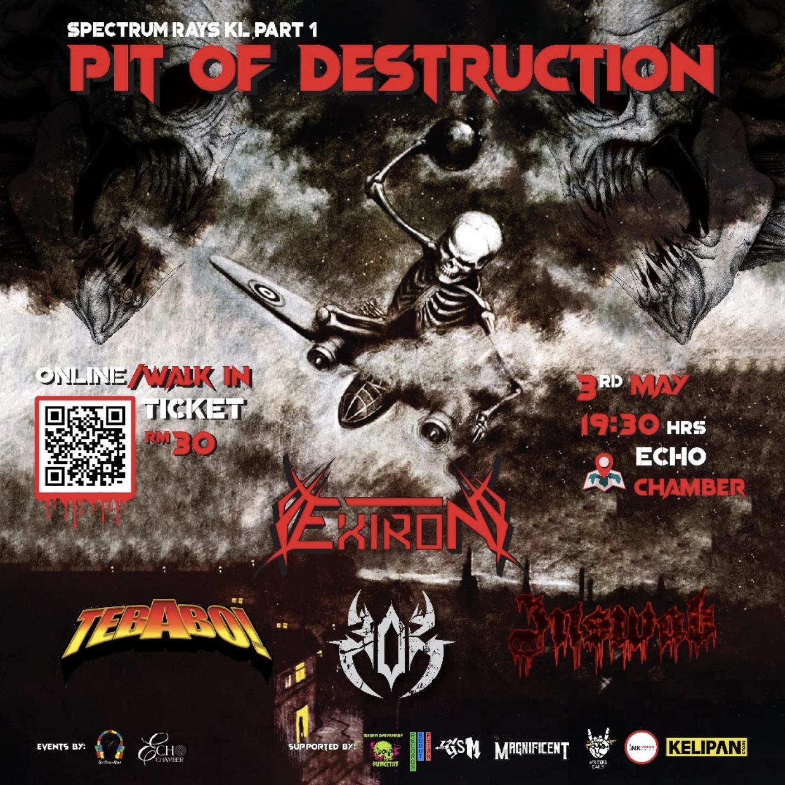

302
Death Thrash Metal from Sungai Buloh
Death Thrash Metal from Sungai Buloh

Formed in 2023, 302 is a death/thrash metal band hailing from Sungai Buloh, Malaysia. Blending old-school thrash intensity with modern groove and aggression, the band made their explosive debut alongside legendary acts BLACKFIRE and BUNUHDIRI at Timeless Studio, Damansara Perdana. With razor-sharp riffs, relentless rhythms, and a commanding stage presence, 302 quickly established a cult following in the underground scene. Their debut single “For Freedom†(2024) captures the band’s raw energy and commitment to crafting metal that hits hard — both musically and thematically. Currently in the works: their upcoming debut album, which promises to be a sonic assault influenced by titans like Sodom, Sepultura, and Megadeth — while carving their own distinct sound in Southeast Asia’s metal landscape.

Date: 3 May 2025
Venue: Echo Chamber
With: Exiron, Tebabo, Inswab
Date: 24 May 2025
Venue: Sarang Bunyi Studio, Wangsa Melawati
With: Exhuman, Inversion, Sammael Abraham, AKTA